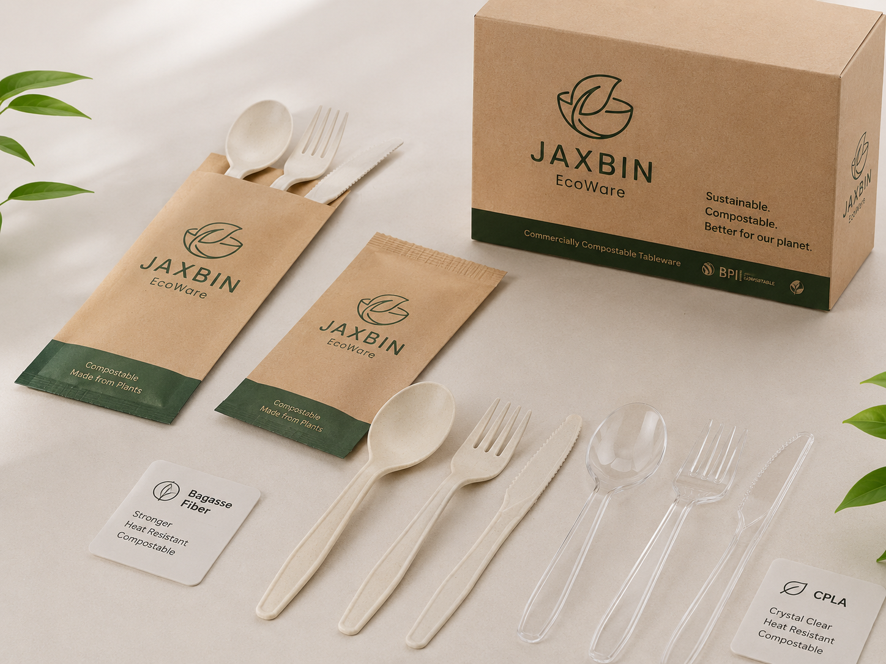

Disposable Wooden Fork
A smooth, lightweight fork for takeaway meals, catering, tasting events and foodservice kits.
Explore Jaxbin’s product families by material and foodservice use. Final specifications, packaging and documentation are confirmed per quotation.
A smooth, lightweight fork for takeaway meals, catering, tasting events and foodservice kits.
Single-use wooden knife designed for sandwiches, pastries and light meals with a natural brand presentation.
Rounded wooden spoon for desserts, soups, yogurt, sampling and grab-and-go meal kits.
A ready-to-serve wooden cutlery kit for restaurants, airlines, hotels, events and delivery brands.

A firm bamboo fork with a premium natural appearance for hospitality, catering and private-label ranges.
A sturdy bamboo knife option for B2B foodservice distributors and branded disposable tableware programs.
A smooth bamboo spoon suited to desserts, rice, salads, soup and premium catering applications.
An all-in-one bamboo service kit built for hotels, airlines, restaurants, events and retailers.

Plant-fiber cutlery for buyers seeking coordinated tableware and food-container programs.
Heat-resistant CPLA cutlery available for industrial-compostable product programs where facilities accept it.

A molded-fiber plate for catering, takeaway service, parties and foodservice distribution.
A natural-looking plate solution for premium events, buffets, hospitality and branded retail ranges.
Lightweight wooden plates for event service, appetizers, tasting menus and natural product collections.
A versatile molded-fiber bowl for rice, salad, soup, noodles and takeaway meal programs.

Hinged takeaway containers for restaurants, meal prep, catering, delivery and institutional foodservice.
Customizable paper food packaging for hot and cold takeaway meals, snacks and delivery brands.

Straight, polished bamboo skewers for barbecue, fruit, appetizers, catering and food processing.
Decorative picks for cocktails, canapés, sandwiches, fruit, bakery and hospitality presentation.
Hand-finished knotted picks for premium catering, appetizers, hotel buffets and event service.

Smooth single-use stirrers for cafés, offices, hotels, airlines and beverage service stations.
Slim bamboo stirrers that support natural-looking beverage service and private-label programs.
Food-contact sticks for ice cream, frozen treats, crafts and industrial production applications.

Reusable or single-service bamboo straw options for hospitality and natural lifestyle collections.
Custom paper straws for cafés, quick-service restaurants, events and beverage brands.
Foodservice bamboo chopsticks for restaurants, takeaway, retail and private-label distribution.
Send a target product list and carton quantities so we can review compatibility and loading priorities.